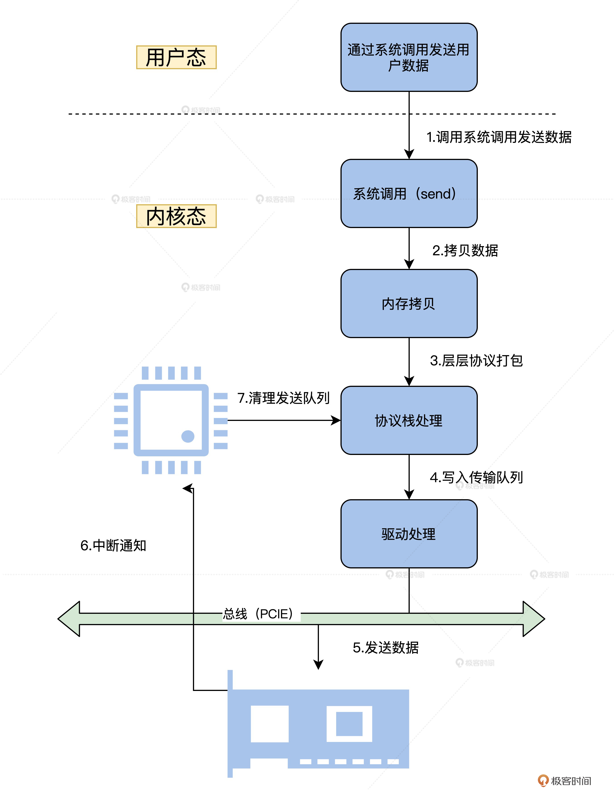
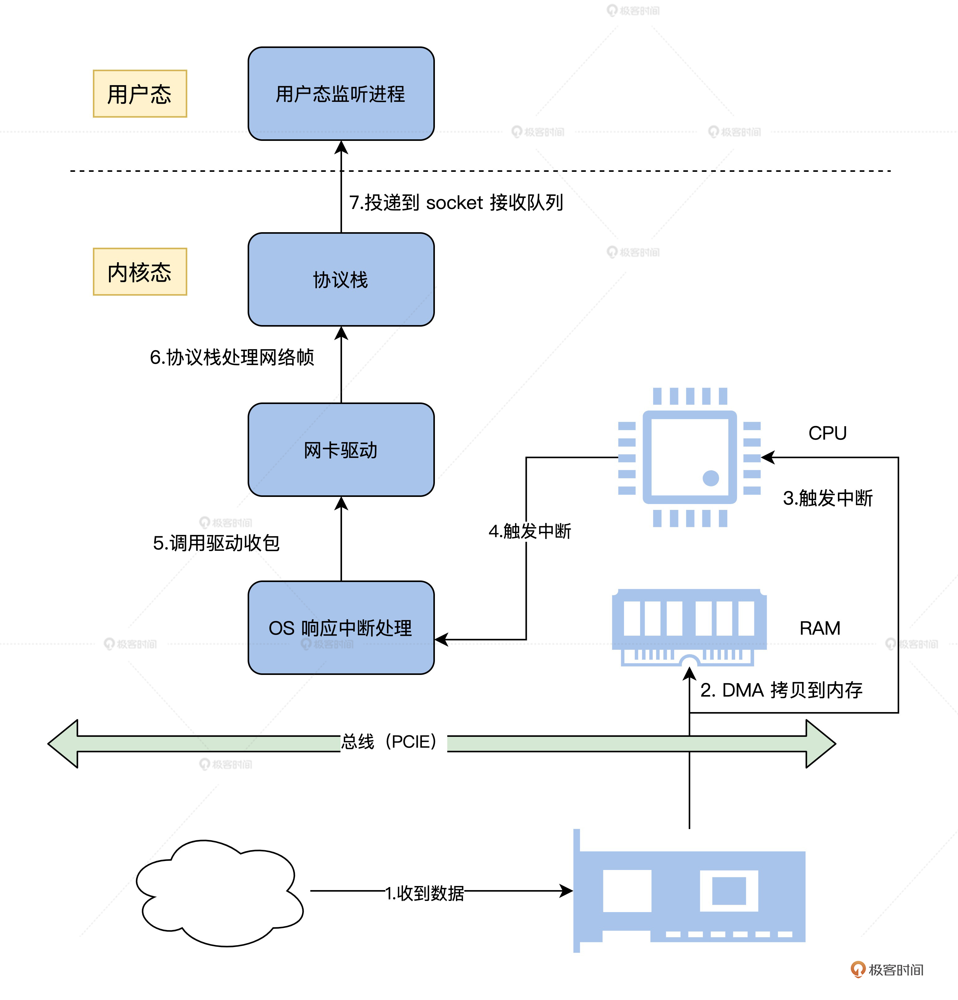
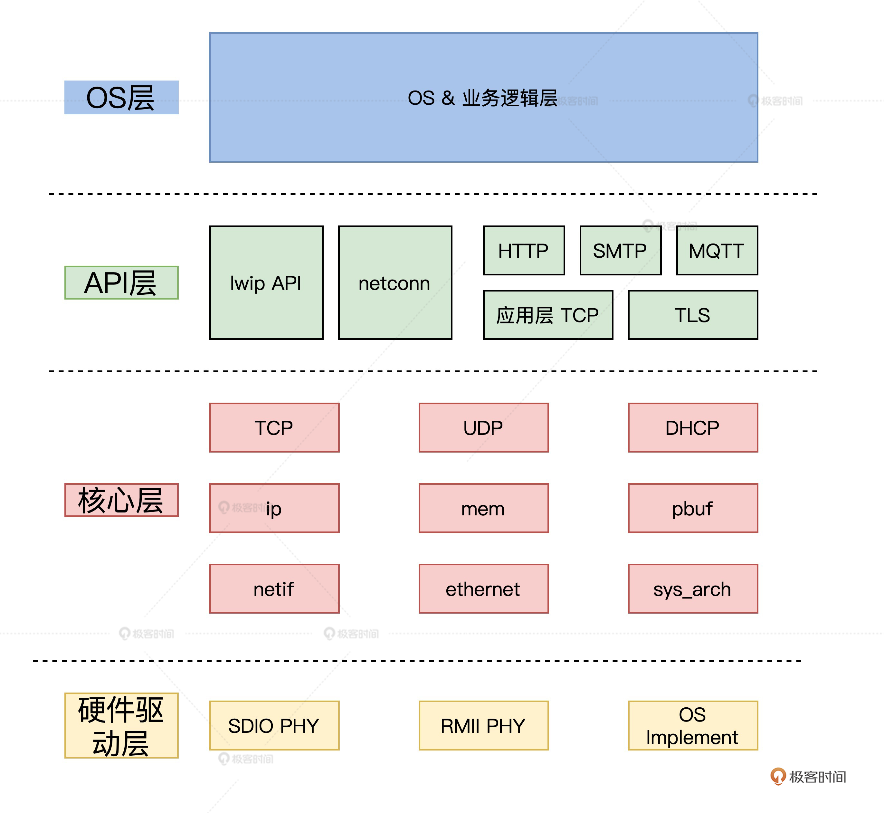
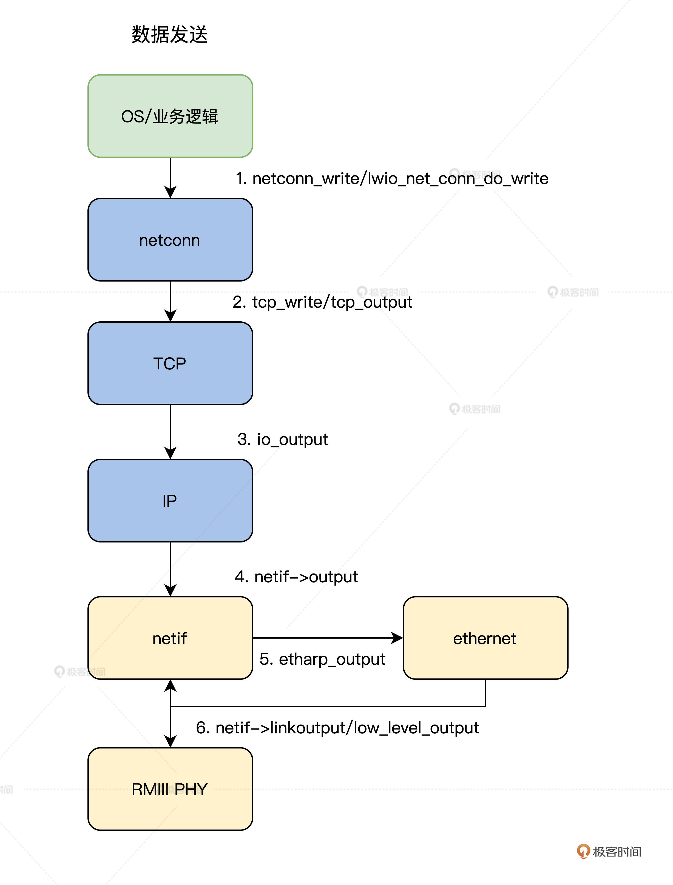
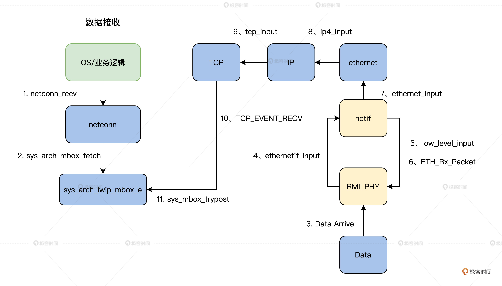
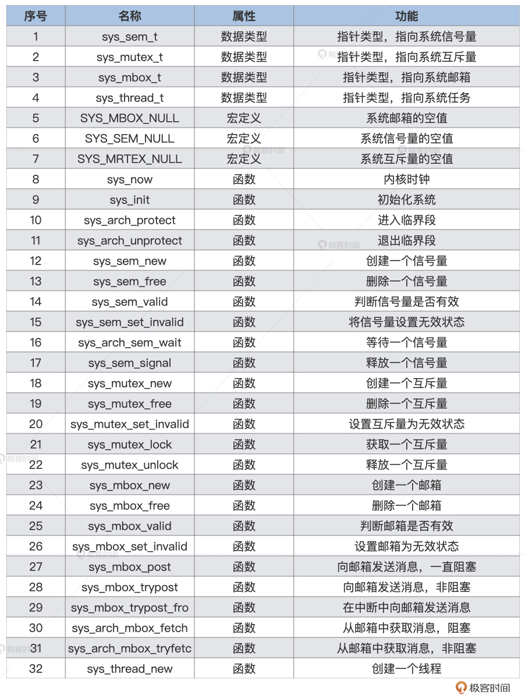

- 00 开篇词 为什么要学写一个操作系统？.md
- 00 编辑手记 升级认知，迭代自己的操作系统.md
- 01 程序的运行过程：从代码到机器运行.md
- 02 几行汇编几行C：实现一个最简单的内核.md
- 03 黑盒之中有什么：内核结构与设计.md
- 04 震撼的Linux全景图：业界成熟的内核架构长什么样？.md
- 05 CPU工作模式：执行程序的三种模式.md
- 06 虚幻与真实：程序中的地址如何转换？.md
- 07 Cache与内存：程序放在哪儿？.md
- 08 锁：并发操作中，解决数据同步的四种方法.md
- 09 瞧一瞧Linux：Linux的自旋锁和信号量如何实现？.md
- 10 设置工作模式与环境（上）：建立计算机.md
- 11 设置工作模式与环境（中）：建造二级引导器.md
- 12 设置工作模式与环境（下）：探查和收集信息.md
- 13 第一个C函数：如何实现板级初始化？.md
- 14 Linux初始化（上）：GRUB与vmlinuz的结构.md
- 15 Linux初始化（下）：从_start到第一个进程.md
- 16 划分土地（上）：如何划分与组织内存？.md
- 17 划分土地（中）：如何实现内存页面初始化？.md
- 18 划分土地（下）：如何实现内存页的分配与释放？.md
- 19 土地不能浪费：如何管理内存对象？.md
- 20 土地需求扩大与保障：如何表示虚拟内存？.md
- 21 土地需求扩大与保障：如何分配和释放虚拟内存？.md
- 22 瞧一瞧Linux：伙伴系统如何分配内存？.md
- 23 瞧一瞧Linux：SLAB如何分配内存？.md
- 24 活动的描述：到底什么是进程？.md
- 25 多个活动要安排（上）：多进程如何调度？.md
- 26 多个活动要安排（下）：如何实现进程的等待与唤醒机制？.md
- 27 瞧一瞧Linux：Linux如何实现进程与进程调度_.md
- 28 部门分类：如何表示设备类型与设备驱动？.md
- 29 部门建立：如何在内核中注册设备？.md
- 30 部门响应：设备如何处理内核I_O包？.md
- 31 瞧一瞧Linux：如何获取所有设备信息？.md
- 32 仓库结构：如何组织文件_.md
- 33 仓库划分：文件系统的格式化操作.md
- 34 仓库管理：如何实现文件的六大基本操作？.md
- 35 瞧一瞧Linux：虚拟文件系统如何管理文件？.md
- 36 从URL到网卡：如何全局观察网络数据流动？.md
- 37 从内核到应用：网络数据在内核中如何流转.md
- 38 从单排到团战：详解操作系统的宏观网络架构.md
- 39 瞧一瞧Linux：详解socket实现与网络编程接口.md
- 40 瞧一瞧Linux：详解socket的接口实现.md
- 41 服务接口：如何搭建沟通桥梁？.md
- 42 瞧一瞧Linux：如何实现系统API？.md
- 43 虚拟机内核：KVM是什么？.md
- 44 容器：如何理解容器的实现机制？.md
- 45 ARM新宠：苹果的M1芯片因何而快？.md
- 46 AArch64体系：ARM最新编程架构模型剖析.md
- LMOS来信：第二季课程带你“手撕”计算机基础.md
- 大咖助场 以无法为有法，以无限为有限.md
- 用户故事 yiyang：我的上机实验“爬坑指南”.md
- 用户故事 成为面向“知识库”的工程师.md
- 用户故事 技术人如何做选择，路才越走越宽？.md
- 用户故事 操作系统发烧友：看不懂？因为你没动手.md
- 用户故事 用好动态调试，助力课程学习.md
- 用户故事 艾同学：路虽远，行则将至.md
- 结束语 生活可以一地鸡毛，但操作系统却是心中的光.md
37 从内核到应用：网络数据在内核中如何流转
你好，我是 LMOS。
上节课我们对一次请求到响应的过程积累了一些宏观认识，相信你已经对整个网络架构有了一个整体蓝图。这节课，让我们来仔细研究一下网络数据是如何在内核中流转的，让你开阔视野，真正理解底层工程的实现思路。
凡事先问目的，在网络数据在内核中的流转，最终要服务于网络收发功能。所以，我会先带你了解一次具体的网络发收过程，然后带你了解lwIP的网络数据收发。有了这些基础，我还会示范一下如何实现协议栈移植，你可以在课后自行动手拓展。
好，让我们正式开始今天的学习吧。课程配套代码，你可以点击这里获取。
先看看一次具体的网络发收过程
理解软件的设计思想，最重要的是先要理解需求。而内核中的数据流转也只是为了满足网络收发的需求而进行的设计。
发送过程总览
下面我们一起来看看应用程序通过网络发送数据的全过程。
应用程序首先会准备好数据，调用用户态下的库函数。接着调用系统API接口函数，进入到内核态。
内核态对应的系统服务函数会复制应用程序的数据到内核的内存空间中，然后将数据移交给网络协议栈，在网络协议栈中将数据层层打包。
最后，包装好的数据会交给网卡驱动，网卡驱动程序负责将打包好的数据写入网卡并让其发送出去。
我为你准备了一张流程图供你参考，如下所示。

上图中，只是展示了大致流程，其中还有DMA处理、CRC校验、出错处理等细节，但对于我们理解梳理发送流程，这些就够了。
接收过程总览
了解了发送数据的过程以后，掌握接收数据的过程就更容易了，因为它就是发送数据的逆过程。
首先，网卡接收到数据，通过DMA复制到指定的内存，接着发送中断，以便通知网卡驱动，由网卡驱动处理中断复制数据。然后网络协议收到网卡驱动传过来的数据，层层解包，获取真正的有效数据。最后，这个数据会发送给用户态监听的应用进程。
为了让你更加直观地了解这一过程，我特意准备了一张流程图供你参考，如下所示。

前面只是帮你梳理一下数据的发送与接收的流程，其实我们真正要关注的是网络协议。可是我们若手动实现一个完整的网络协议，不太现实，网络协议的复杂度大到也许要重新开一门课程，才可以完全解决，所以下面我们借用一下lwIP项目，以这个为基础来讨论网络协议。
认识一下lwIP架构
现在我们清楚了一次具体网络发收过程是怎么回事，那怎么让Cosmos实现网络通信呢？这里我们选择lwIP这个TCP/IP协议的轻量级开源项目，让它成为Cosmos的网络部的战略合作伙伴。
lwIP是由瑞典计算机科学研究院（SICS）的Adam Dunkels开发的小型开源TCP/IP协议栈。它是一个用C语言实现的软件组件，一共有两套接口层，向下是操作系统要提供的，向上是提供给应用程序的。这样lwIP就能嵌入到任何操作系统之中工作，并为这个操作系统上的应用软件提供网络功能支持了。
为啥说lwIP是轻量级的呢？很简单，跟Linux比，从代码行数上就能看得出。lwIP的设计目标就是尽量用少量资源消耗，实现一个相对完整的TCP/IP协议栈。
这里的“完整性”主要是指TCP协议的完整性，实现的关键点就是在保持TCP协议主要功能的基础上减少对RAM的占用。同时，lwIP还支持IPv6的标准实现，这也让我们与现代交换设备的对接变得非常方便。
这里额外提供你一份扩展阅读资料，lwIP的项目主页链接，这里包含了大量相关资料，感兴趣的同学可以课后深入了解。另外，lwIP既可以移植到操作系统上运行，也可以在没有操作系统的情况下独立运行。
lwIP在结构上可分为四层：OS层、API层、核心层、硬件驱动层，如下图所示。

第一层
MCU的业务层是lwIP的服务对象，也是其自身代码使用lwIP的地方。大部分时候我们都是从这里入手，通过netconn或lwip_api使用lwIP的各种功能函数。
在典型的TCP通信的客户端应用程序中，一般先要通过netconn_new创建一个struct netconn对象，然后调用netconn_connect连接到服务器，并返回成功或失败。成功后，可以调用netconn_write向服务器发送数据，也可以调用netconn_recv接收数据。最后，关闭连接并通过netconn_close释放资源。
第二层
lwIP的api层是netconn的功能代码所在的层，负责为上层代码提供netconn的api。习惯使用socket的同学也可以使用lwip_socket等函数，以标准的socket方式调用lwIP。新版本增加了http、mqtt等应用的代码，这些额外的应用对目前的物联网通信来说确实很方便。
第三层
lwIP的核心层存放了TCP/IP协议栈的核心代码，它不仅实现了大部分的TCP和UDP功能，还实现了DNS、ICMP、IGMP等协议，同时也实现了内存管理和网络接口功能。
该层提供了sys_arch模块设计，便于将lwIP移植到不同的操作系统，如线程创建、信号量、消息队列等功能。和操作系统相关的真正定义写在了lwip/include/sys.h文件中。
第四层
硬件驱动层提供PHY芯片驱动，用来匹配lwIP的使用。lwIP会调用该层的代码将组装好的数据包发送到网络，同时从网络接收数据包并进行分析，实现通信功能。
lwIP的三套应用程序编程接口
理清了架构，我们再说一说lwIP的应用程序编程接口，一共有三套。
原始API：原始的lwIP API。它通过事件回调机制开发应用程序。该应用编程接口提供了最佳的性能和优化的代码长度，但它增加了应用程序开发的复杂性。
Netconn API：是高级的有序API、需要实时操作系统（RTOS）的支持（提供进程间通信的方法）。Netconn API支持多线程。
BSD套接字API：类似伯克利的套接字API（在Netconn API上开发，需要注意NETCONN API 即为 Sequential API）。
对于以上三种接口，前者只需要裸机调用，后两种需要操作系统调用。因此，移植lwIP有两种方法，一种是只移植内核，不过这样之后只能基于RAW/Callback API编写应用程序。第二种是移植内核和上层API。这时应用程序编程可以使用三种API，即RAW/Callback API、顺序API和Socket API。
lwIP执行流程
现在，想必聪明的你已经理解了前文中的网络收发过程。
接下来，让我们顺着之前的思路来对应到lwIP在收发过程中的核心函数，具体过程我同样梳理了流程图。你可以结合图里关键的函数名以及步骤顺序，按这个顺序在IwIP代码中检索阅读。
数据发送
首先要说的是数据发送过程。
由于我们把lwIP作为Cosmos的一个内核组件来工作，自然要由lwIP接收来自内核上层发来的数据。内核上层首先会调用lwIP的netconn层的接口函数netconn_write，通过这个函数，数据正式流进lwIP组件层。
接着，netconn层调用lwIP组件的TCP层的接口函数tcp_write，在TCP层对数据首次进行打包。然后，TCP层将打包好的数据通过调用io_output函数，向下传递给lwIP组件的IP层，进行打包。
最后，IP层将打包好的数据发送给网卡驱动接口层netif，这里调用了实际的网卡驱动程序，将数据发送出去。

数据接收
数据接收的步骤相比数据发送稍微多一些，但也不用害怕，跟住我的讲解思路一定可以理清这个过程。
数据接收需要应用程序首先调用lwIP的netconn层的netconn_recv接口。然后由netconn层调用sys_arch_mbox_fetch函数，进入监听等待相关的mbox。
接着，数据会进入网卡，驱动程序相关的函数负责把它复制到内存。再然后是调用ethernet_input函数，进入ethernet层。完成相关处理后，调用ip4_input函数，数据在lwIP组件的IP层对数据解包，进行相应处理之后，还会调用tcp_input函数，进入lwIP组件的TCP层对数据解包。
最后，调用sys_mbox_trypost函数把数据放入特定的mbox，也就是消息盒子里，这样等待监听的应用程序就能得到数据了。

在了解了lwIP组件收发数据的过程之后，就可以进行移植的相关工作了。lwIP的结构设计非常优秀，这让移植工作变得很容易。我们这里只要了解lwIP组件的sys_arch层的接口函数即可。
下面我们一起了解lwIP的移植细节。
协议栈移植
lwIP有两种移植模式，一种是NO_SYS，无操作系统模式，一种是有操作系统模式。用NO_SYS模式比较简单，你可以自行探索。
操作系统模式主要需要基于操作系统的 IPC 机制，对网络连接进行了抽象（信号量、邮箱/队列、互斥体等机制），从而保证内核与应用层API的通讯，这样做的好处是lwIP 内核线程可以只负责数据包的 TCP/IP 封装和拆封，而不用进行数据的应用层处理，从而极大地提高系统对网络数据包的处理效率。
而这些操作系统模拟层的函数主要是在sys.h中声明的，我们一般在sys_arch.c文件中完成其定义。所以，我们很清楚，带操作系统的移植就是在无操作系统的基础上添加操作系统模拟层。
再接下来我们就看看操作系统模拟层的编写。
有操作系统模式
在之前的课程里我们已经正确实现了Cosmos操作系统了，现在我们就可以在Cosmos系统提供的IPC等机制基础之上，对照 sys.h 文件中声明的函数一一去实现了。
实际工程中完整移植网络栈，需要将后面表格里的这30多个函数全部实现。我会带你完成邮箱和系统线程相关的关键部分移植，其他函数的移植思路也大同小异，这里就不一一演示了。

从上表中我们可以发现，这些变量和函数主要面向信号量、互斥体和邮箱，包括创建、删除、释放和获取等各种操作，所以我们需要根据操作系统的规定来实现这些函数。
突然看到这么多功能，是不是有点慌？其实不用怕，因为这些功能的实现起来非常简单。首先，我们通过一个例子来看看邮箱功能的实现。
在lwIP中，用户代码通过邮箱与协议栈内部交互。邮箱本质上是指向数据的指针。API将指针传递给内核，内核通过这个指针访问数据，然后进行处理。相反，内核也是通过邮箱将数据传递给用户代码的。
具体代码如下，关键内容我都做了详细注释。
/*创建一个空的邮箱。*/
err_t sys_mbox_new(sys_mbox_t *mbox, int size)
{
osMessageQDef(QUEUE, size, void *);
*mbox = osMessageCreate(osMessageQ(QUEUE), NULL);
#if SYS_STATS
++lwip_stats.sys.mbox.used;
if (lwip_stats.sys.mbox.max < lwip_stats.sys.mbox.used) {
lwip_stats.sys.mbox.max = lwip_stats.sys.mbox.used;
}
#endif /* SYS_STATS */
if (*mbox == NULL)
return ERR_MEM;
return ERR_OK;
}
/*重新分配一个邮箱。如果邮箱被释放时，邮箱中仍有消息，在lwIP中这是出现编码错误的指示，并通知开发人员。*/
void sys_mbox_free(sys_mbox_t *mbox)
{
if( osMessageWaiting(*mbox) )
{
portNOP();
#if SYS_STATS
lwip_stats.sys.mbox.err++;
#endif /* SYS_STATS */
}
osMessageDelete(*mbox);
#if SYS_STATS
--lwip_stats.sys.mbox.used;
#endif /* SYS_STATS */
}
/*发送消息到邮箱*/
void sys_mbox_post(sys_mbox_t *mbox, void *data)
{
while(osMessagePut(*mbox, (uint32_t)data, osWaitForever) != osOK);
}
/*尝试将消息发送到邮箱*/
err_t sys_mbox_trypost(sys_mbox_t *mbox, void *msg)
{
err_t result;
if ( osMessagePut(*mbox, (uint32_t)msg, 0) == osOK)
{
result = ERR_OK;
}
else {
result = ERR_MEM;
#if SYS_STATS
lwip_stats.sys.mbox.err++;
#endif /* SYS_STATS */
}
return result;
}
/*阻塞进程从邮箱获取消息*/
u32_t sys_arch_mbox_fetch(sys_mbox_t *mbox, void **msg, u32_t timeout)
{
osEvent event;
uint32_t starttime = osKernelSysTick();;
if(timeout != 0)
{
event = osMessageGet (*mbox, timeout);
if(event.status == osEventMessage)
{
*msg = (void *)event.value.v;
return (osKernelSysTick() - starttime);
}
else
{
return SYS_ARCH_TIMEOUT;
}
}
else
{
event = osMessageGet (*mbox, osWaitForever);
*msg = (void *)event.value.v;
return (osKernelSysTick() - starttime);
}
}
/*尝试从邮箱获取消息*/
u32_t sys_arch_mbox_tryfetch(sys_mbox_t *mbox, void **msg)
{
osEvent event;
event = osMessageGet (*mbox, 0);
if(event.status == osEventMessage)
{
*msg = (void *)event.value.v;
return ERR_OK;
}
else
{
return SYS_MBOX_EMPTY;
}
}
/*判断一个邮箱是否有效*/
int sys_mbox_valid(sys_mbox_t *mbox)
{
if (*mbox == SYS_MBOX_NULL)
return 0;
else
return 1;
}
/*设置一个邮箱无效*/
void sys_mbox_set_invalid(sys_mbox_t *mbox)
{
*mbox = SYS_MBOX_NULL;
}
// 创建一个新的信号量。而 "count"参数指示该信号量的初始状态
err_t sys_sem_new(sys_sem_t *sem, u8_t count)
{
osSemaphoreDef(SEM);
*sem = osSemaphoreCreate (osSemaphore(SEM), 1);
if(*sem == NULL)
{
#if SYS_STATS
++lwip_stats.sys.sem.err;
#endif /* SYS_STATS */
return ERR_MEM;
}
if(count == 0) // Means it can't be taken
{
osSemaphoreWait(*sem,0);
}
#if SYS_STATS
++lwip_stats.sys.sem.used;
if (lwip_stats.sys.sem.max < lwip_stats.sys.sem.used) {
lwip_stats.sys.sem.max = lwip_stats.sys.sem.used;
}
#endif /* SYS_STATS */
return ERR_OK;
}
此外还有一些函数也是协议栈需要的函数，特别是sys_thread_new函数，不但协议栈在初始化时需要用到，在后续我们实现各类基于lwIP的应用时也会用得到，它的具体实现如下。
sys_thread_t sys_thread_new(const char *name, lwip_thread_fn thread , void *arg, int stacksize, int prio)
{
const osThreadDef_t os_thread_def = { (char *)name, (os_pthread)thread, (osPriority)prio, 0, stacksize};
return osThreadCreate(&os_thread_def, arg);
}
osThreadId osThreadCreate (const osThreadDef_t *thread_def, void *argument)
{
TaskHandle_t handle;
#if( configSUPPORT_STATIC_ALLOCATION == 1 ) && ( configSUPPORT_DYNAMIC_ALLOCATION == 1 )
if((thread_def->buffer != NULL) && (thread_def->controlblock != NULL)) {
handle = xTaskCreateStatic((TaskFunction_t)thread_def->pthread,(const portCHAR *)thread_def->name,
thread_def->stacksize, argument, makeFreeRtosPriority(thread_def->tpriority),
thread_def->buffer, thread_def->controlblock);
}
else {
if (xTaskCreate((TaskFunction_t)thread_def->pthread,(const portCHAR *)thread_def->name,
thread_def->stacksize, argument, makeFreeRtosPriority(thread_def->tpriority),
&handle) != pdPASS) {
return NULL;
}
}
#elif( configSUPPORT_STATIC_ALLOCATION == 1 )
handle = xTaskCreateStatic((TaskFunction_t)thread_def->pthread,(const portCHAR *)thread_def->name,
thread_def->stacksize, argument, makeFreeRtosPriority(thread_def->tpriority),
thread_def->buffer, thread_def->controlblock);
#else
if (xTaskCreate((TaskFunction_t)thread_def->pthread,(const portCHAR *)thread_def->name,
thread_def->stacksize, argument, makeFreeRtosPriority(thread_def->tpriority),
&handle) != pdPASS) {
return NULL;
}
#endif
return handle;
}
至此，基于Cosmos操作系统移植lwIP协议栈的关键部分就算完成了。
重点回顾
好，这节课的内容告一段落了，我来给你做个总结。
我们首先从数据发送接收的视角，观察了数据从用户态到内核态，再从内核态到流动到用户态的全过程。
接着，我们发现网络协议栈移植与DMA、内核的IPC、信号量、DMA等机制密切相关。理解网络栈移植的关键步骤，能够让我们更好地理解内核特性在工程中是如何应用的。
最后，我们实现了将lwIP网络协议栈的关键部分移植到Cosmos操作系统下。不过这节课我带你实现了邮箱和系统线程相关的关键部分，其他函数移植道理相通，感兴趣的同学可以自行探索。
思考题
我们已经了解到了操作系统内核和网络协议栈的关系，可是网络协议栈真的一定只能放在内核态实现么？
欢迎你在留言区跟我交流探讨。也欢迎你把这节课分享给自己的朋友、同事。
我是LMOS，我们下节课见！
© 2019 - 2023 Liangliang Lee. Powered by gin and hexo-theme-book.